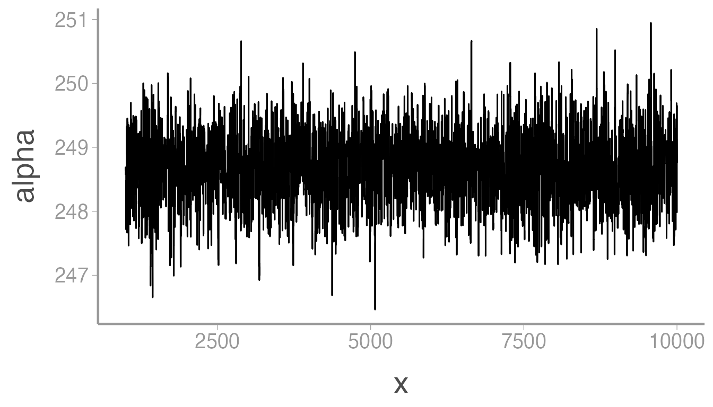
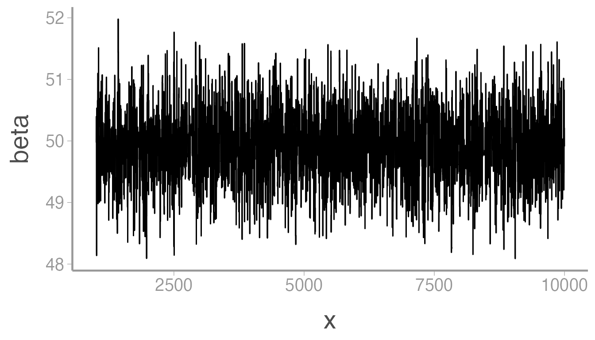
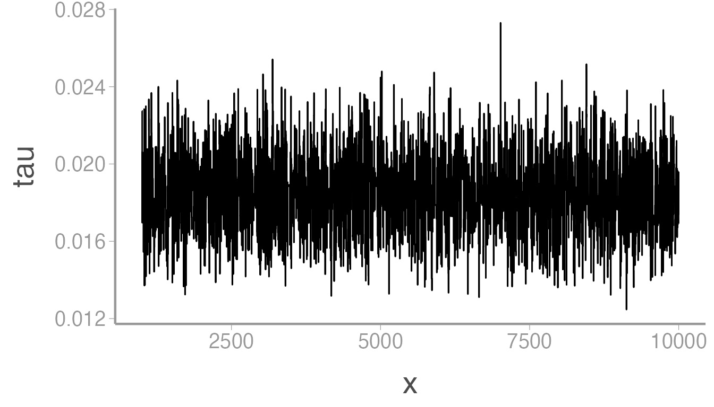
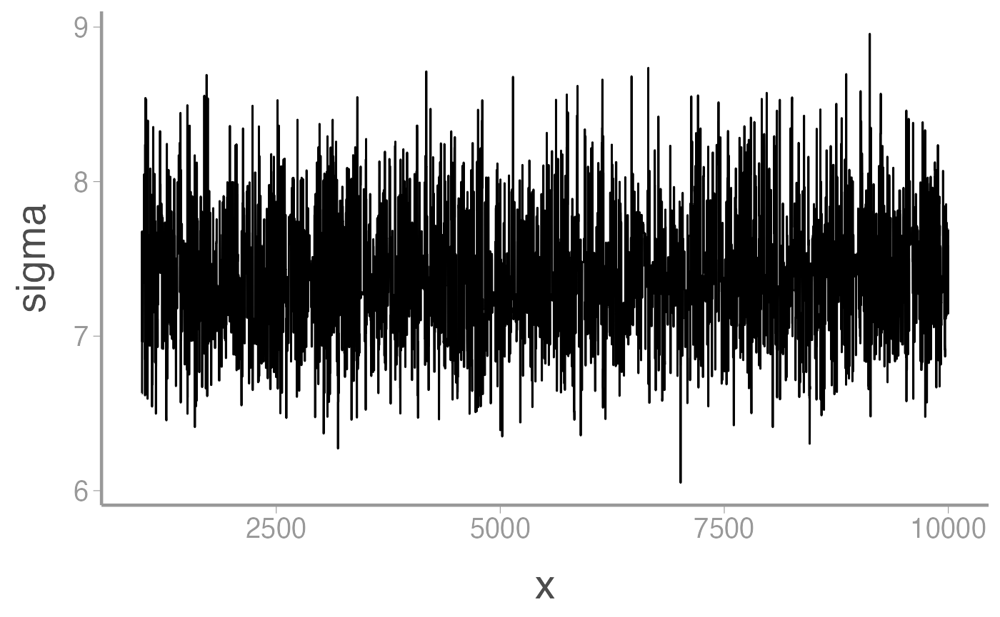

Metroplis sampler for a simple linear regression
WILD6900
2019-04-08
metropolis.RmdIn this activity, we will use R to create a simple Metroplis sampler to estimate the posterior distributions of the parameters in a linear regression model. This example is slightly more complicated than the sampler we developed during lecture because instead of estimating the posterior distribution for a single parameter, we have to create a sampler that iterates the MCMC steps over multiple parameters. However, as you will see, this is not so hard. To check that the sampler does what we want it to do, we will use the simulated data we created in the previous activity as input for the sampler and check that the posterior distributions match the data-generating parameters.
Objectives
Create a Metroplis sampler to estimate the parameters of a linear regression model
Create custom functions to avoid copying/pasting code
-
Rfunctions used in this exercise:
Markov chain Monte Carlo
In lecture, we learned the basic steps of the Metropolis sampler:
Choose an initial value for \(\theta\) (call it \(\theta^1\))
Propose a new value \(\theta^*\) from a proposal distribution
Compute the probability of accepting \(\theta^*\) using the joint distributions evaluated at \(\theta^*\) and the previous value \(\theta^{k-1}\)
Accept \(\theta*\) (i.e., \(\theta^{k} = \theta^*\)) with the probability estimated in step 2, otherwise retain the previous value (i.e., \(\theta^{k} = \theta^{k-1}\)
Seed count model
When we generated the seed count data, we did so assuming a linear model that linked pollination visits to seed counts:
\[y_i = \alpha + \beta * x_i + \epsilon_i\] \[\epsilon_i \sim Normal(0, \sigma^2)\]
This model includes 3 random variables that we want to estimate posterior distributions for: \(\alpha\), \(\beta\), and \(\sigma^2\) (remember that the \(y_i\) and \(x_i\) are observed and therefore treated as fixed and known rather than random variables governed by probability distrubtions). So:
\[[\alpha, \beta, \sigma^2|y_i] \propto [y_i|\alpha, \beta, \sigma^2][\alpha][\beta][\sigma^2] \tag{1}\]
Sticking with the data generating model, we can define the likelihood of our model using a Normal distribution. For given values of \(\alpha\), \(\beta\), and \(\sigma^2\), we estimate the likelihood as:
\[[y_i|\alpha, \beta, \tau] = \prod_{i=1}^N Normal(y_i|\alpha + \beta \times x_i, \sigma^2)\]
Because \(\alpha\), \(\beta\), and \(\sigma^2\) are random variables, we must define prior distributions for them. Because \(\alpha\) and \(\beta\) can be positive or negative real numbers (we’ll ignore for now that we know the sign of each in our data generating model), we can use normal priors:
\[[\alpha] = Normal(\alpha|0, 50)\]
\[[\beta] = Normal(\beta|0, 50)\]
These are relatively non-informative priors for the intercept and slope coefficients.
We will slightly modify the model for \(\sigma^2\) to be consistent with the way JAGS parameterizes normal distributions. Instead of modeling the variance (\(\sigma^2\)) as a random variable, we will model the precision (\(\tau\)) noting that:
\[\tau = \frac{1}{\sigma^2}\]
This is a little confusing if you are used to working with standard deviations or variances but as you will see, we can easily switch back and forth between the two when we create the model. For \(\tau\), we will use a relatively diffuse gamma prior:
\[[\tau] = Gamma(\tau|0.01, 0.01)\]
Custom functions
At each interation of the sampler, we will need to perform the same set of tasks, namely estimating the likelihood and joint distributions for the proposed and current parameter values. We could do this by copying and pasting the code necessary for these calculations at each point in the sampler code where we need them. However, any time you find yourself copying and pasting the same code more than once or twice, it’s a good idea to consider wrapping that code in a function, which will do here.
Function for calculating likelihood
Given values of \(\alpha\), \(\beta\), and \(\tau\), we can estimate the likelihood in R using the dnorm() function (note that we will take the sum of the log likelihoods rather than the product of the likelihoods to avoid numerical issues):
# Convert precision into standard deviation
sigma <- sqrt(1/tau)
# Calculate the predicted count for each flower
lp <- alpha + beta * x
# Calculate the likelihood of our data given the model
sum(dnorm(y, lp, sigma, log = TRUE)) To turn this code into a function, first open a new script and call it calc_like.R. Save it in the R/ sub-directory. This script will contain the fuction code. The function code is:
calc_like <- function(y, alpha, beta, tau, x) {
sigma <- sqrt(1/tau)
lp <- alpha + beta * x
ll <- sum(dnorm(y, lp, sigma, log = TRUE))
return(ll)
}This allows us to put in the data (y), covariate values (x), and values of \(\alpha\), \(\beta\), and \(\tau\) as arguments and the function will return the log likelihood.
Save this code in the script and then close the script.
Functions for calculating prior probabilities
We also need functions to estimate the prior probabilities for specific values of \(\alpha\), \(\beta\), and \(\tau\). Create a new script titled priors.R and save it to the R/ sub-directory. The following functions will take values of each parameter and estimate the prior probability given the prior distributions we defined above:
priorAlpha <- function(alpha, mu = 0, tau = 0.001){
sigma <- sqrt(1/tau)
prob <- dnorm(alpha, mu, sqrt(1/tau), log = TRUE)
return(prob)
}
priorBeta <- function(beta, mu = 0, tau = 0.001){
sigma <- sqrt(1/tau)
prob <- dnorm(beta, mu, sqrt(1/tau), log = TRUE)
return(prob)
}
priorTau <- function(tau, shape1 = 0.01, rate1 = 0.01){
prob <- dgamma(tau, shape = shape1, rate = rate1, log = TRUE)
return(prob)
} Metropolis sampler
Now we are ready to create the sampler. Remember that when there are mutiple parameters, we need to define the full conditionals. For each random variable in the model, we define the full conditional by including any element on the right hand side of eq. 1 that contains the parameter (note the change to \(\tau\)):
\[[\alpha|.] = [y_i|\alpha, \beta, \tau][\alpha]\] \[[\beta|.] = [y_i|\alpha, \beta, \tau][\beta]\]
\[[\tau|.] = [y_i|\alpha, \beta, \tau][\tau]\]
In the sampler, we loop over each parameter, going through the Metroplis steps for each and treating the other parameters as known (based on their current value in the chain). If this in not clear, walking through the R code will hopefully make it more concrete (don’t worry about trying to copy and run the code in this section, which is simply for illustration. In the next section, we will slightly modify this code to run the sampler for our seed count data).
First, we set the length of our chains, set the tuning parameter for the proposal distribution, and create an empty data frame to store the samples and a binary variable for estimating the acceptance rate:
## Length of chains
nIter <- 10000
## Tuning parameter
tuning <- 1.5
## Empty data frame to store posterior samples of each parameter
mcmc_df <- data.frame(x = 1:nIter,
alpha = numeric(nIter),
beta = numeric(nIter),
tau = numeric(nIter),
alpha.accept = 0,
beta.accept = 0
tau.accept = 0)Next, we will randomly generate initial values for each parameter. Remember that these are quite big numbers in the data generating model so we will create initial values of the same magnitude:
## Initial values
mcmc_df$alpha[1] <- runif(1, 200, 300)
mcmc_df$beta[1] <- runif(1, 25, 75)
mcmc_df$tau[1] <- runif(1, 0, 10)The final “set up” step is to estimate the likelihood of our data given these initial values. To do this, we use the calc_like() function we created earlier:
## Initial likelihood
likelihood <- calc_like(y = y, alpha = mcmc_df$alpha[1],
beta = mcmc_df$beta[1], tau = mcmc_df$tau[1],
x = x) Now we create the actual sampler. Below, we will create a loop that implements these steps for each iteration of the chains. Here, we will simply go through each step to make sure you understand what it’s doing. We’ll start by going through the Metropolis steps for \(\alpha\) (though remember the order doesn’t matter):
########################
#### 1. Update alpha
########################
## 1a: Generate candidate value
cand <- rnorm(1, mcmc_df$alpha[i - 1], tuning)
## 1b: Calculate likelihood at candidate value
cand_like <- calc_like(y = y, alpha = cand, beta = mcmc_df$beta[i-1], tau = mcmc_df$tau[i-1], x = x)
## 1c: Calculate likelihood * prior at old value and candidate value
jointOld <- likelihood + priorAlpha(mcmc_df$alpha[i-1])
jointCand <- cand_like + priorAlpha(cand)
## 1d: Acceptance probability
R <- min(1, exp(jointCand - jointOld))
## 1e: Decide whether to accept or not
if(R > runif(1)) { # if accepted
mcmc_df$alpha[i] <- cand
likelihood <- cand_like
} else {
mcmc_df$alpha[i] <- mcmc_df$alpha[i-1]
}Let’s go through this line by line. In step 1a, we generate a new value of \(\alpha\) from a normal distribution centered on the previous value. Remember that the tuning parameter we set earlier determines how big the jumps are between the current and proposed values.
In step 1b, we use the calc_like() function to estimate the likelihood of our data given the new value of \(\alpha\) and the previous values of \(\beta\) and \(\tau\). This is what we mean when we say that we treat the other parameters as fixed and known.
In step 1c, we estimate the joint probability of both the current and proposed values by adding the log likelihood to the log prior probability (note that sum of the log values is the same as the product of the probabilities).
In step 1d, we estimate the probability of accepting the new value. Note that if the proposed value is more likely than the current value (\(R > 1\)), this function will return 1. Otherwise, it returns the ratio. The closer the joint probabilities are, the closer \(R\) will be to 1. The less likely the proposed value is relative to the current value, the smaller \(R\) will be. This means that we will be much less likely to accept new values of \(\alpha\) that are a lot less probable than the current value (though not impossible).
Finally, in step 1e we accept or reject the proposed value. Note that we compare \(R\) to a random value generated from a \(Uniform(0,1)\) distribution. If \(R=1\), it will always be greater than this value so we will always accept the proposed value (mcmc_df$alpha[i] <- cand) and we update the current likelihood to match the current value of \(\alpha\). If \(R<1\), it turns out testing whether \(R\) is less than our randomly generated value from \(Uniform(0,1)\) ensures that we accept \(\alpha\) with probability \(R\) (I’ll leave it to you to prove this based on the properties of the uniform distribution).
Next we do the same thing for \(\beta\), using the new value of \(alpha\) (mcmc_df$alpha[i]) and the previous value of \(\tau\) (mcmc_df$tau[i - 1]):
########################
#### 2. Update beta
########################
## 2a: Generate candidate value
cand <- rnorm(1, mcmc_df$beta[i - 1], tuning)
## 2b: Calculate likelihood at candidate value
cand_like <- calc_like(y = y, alpha = mcmc_df$alpha[i], beta = cand,
tau = mcmc_df$tau[i-1], x = x)
## 2c: Calculate likelihood * prior at old value and candidate value
jointOld <- likelihood + priorBeta(mcmc_df$beta[i-1])
jointCand <- cand_like + priorBeta(cand)
## 2d: Acceptance probability
R <- min(1, exp(jointCand - jointOld))
## 2e: Decide whether to accept or not
if(R > runif(1)) { # if accepted
mcmc_df$beta[i] <- cand
likelihood <- cand_like
} else {
mcmc_df$beta[i] <- mcmc_df$beta[i-1]
}Finally, we update \(\tau\) using the new values of both \(\alpha\) and \(\beta\). The only difference here is that because \(\tau\) has to be \(>0\), the normal proposal distrbution we used for \(\alpha\) and \(\beta\) will not work (it could create negative values). As we learned in lecture, you could create a proposal distribution that generates positive value (e.g., gamma) and use moment matching to estimate the parameters with regards to the current \(\tau\) and the tuning parameter. We’ll use a slightly less efficient approach here to demonstrate there are different ways to enforcing the behavior we want in the sampler. In this cases, will simply add a small value to the current \(\tau\) and automatically reject the proposed value if it’s less than 0. The small value can be negative or positive to allow us to explore the posterior.
########################
#### 3. Update tau
########################
## 3a: Generate candidate value
cand <- mcmc_df$tau[i-1] + runif(1, -0.01, 0.01)
# If candidate value is outside [0,Inf], keep the old value of tau
if (cand < 0) {
mcmc_df$tau[i] <- mcmc_df$tau[i-1]
} else {
## 3b: Calculate likelihood at candidate value
cand_like <- calc_like(y = y, alpha = mcmc_df$alpha[i], beta = mcmc_df$beta[i],
tau = cand, x = x)
## 3c: Calculate likelihood * prior at old value and candidate value
jointOld <- likelihood + priorTau(mcmc_df$tau[i-1])
jointCand <- cand_like + priorTau(cand)
## 3d: Acceptance probability
R <- min(1, exp(jointCand - jointOld))
## 3e: Decide whether to accept or not
if(R > runif(1)) { # if accepted
mcmc_df$tau[i] <- cand
likelihood <- cand_like
} else {
mcmc_df$tau[i] <- mcmc_df$tau[i-1]
}
}
}Running the sampler
Finally, we can run the sampler. Create a new script called metroplis.R (or something similar) and put it in scripts/. First, we will load the packages we need and use the source() function to read in our custom functions (source() runs the .R files given in the argument which in this case will make the functions available for our sampler):
Next, read in the simulated data and set the initial values for the MCMC:
## Read simulated data
sim_dat <- readRDS("data/sim_seed_counts.rds")
## Length of chains
nIter <- 10000
## Tuning parameter
tuning <- 1.5
## Empty data frame to store posterior samples of each parameter
mcmc_df <- data.frame(x = 1:nIter,
alpha = numeric(nIter),
beta = numeric(nIter),
tau = numeric(nIter),
accept.alpha = 0,
accept.beta = 0,
accept.tau = 0)
## Initial values
mcmc_df$alpha[1] <- runif(1, 200, 300)
mcmc_df$beta[1] <- runif(1, 25, 75)
mcmc_df$tau[1] <- runif(1, 0, 1)
## Initial likelihood
likelihood <- calc_like(y = sim_dat$y, alpha = mcmc_df$alpha[1],
beta = mcmc_df$beta[1], tau = mcmc_df$tau[1],
x = sim_dat$visits.c) Now take the sampler code and put it inside a for loop to create the chains. Note that in the likelihood functions we will need to reference our simulated data and covariates:
for(i in 2:nIter){
########################
#### 1. Update alpha
########################
## 1a: Generate candidate value
cand <- rnorm(1, mcmc_df$alpha[i - 1], tuning)
## 1b: Calculate likelihood at candidate value
cand_like <- calc_like(y = sim_dat$y, alpha = cand,
beta = mcmc_df$beta[i-1], tau = mcmc_df$tau[i-1],
x = sim_dat$visits.c)
## 1c: Calculate likelihood * prior at old value and candidate value
jointOld <- likelihood + priorAlpha(mcmc_df$alpha[i-1])
jointCand <- cand_like + priorAlpha(cand)
## 1d: Acceptance probability
R <- min(1, exp(jointCand - jointOld))
## 1e: Decide whether to accept or not
if(R > runif(1)) { # if accepted
mcmc_df$alpha[i] <- cand
likelihood <- cand_like
mcmc_df$accept.alpha[i] <- 1
} else {
mcmc_df$alpha[i] <- mcmc_df$alpha[i-1]
}
########################
#### 2. Update beta
########################
## 2a: Generate candidate value
cand <- rnorm(1, mcmc_df$beta[i - 1], tuning)
## 2b: Calculate likelihood at candidate value
cand_like <- calc_like(y = sim_dat$y, alpha = mcmc_df$alpha[i], beta = cand,
tau = mcmc_df$tau[i-1], x = sim_dat$visits.c)
## 2c: Calculate likelihood * prior at old value and candidate value
jointOld <- likelihood + priorBeta(mcmc_df$beta[i-1])
jointCand <- cand_like + priorBeta(cand)
## 2d: Acceptance probability
R <- min(1, exp(jointCand - jointOld))
## 2e: Decide whether to accept or not
if(R > runif(1)) { # if accepted
mcmc_df$beta[i] <- cand
likelihood <- cand_like
mcmc_df$accept.beta[i] <- 1
} else {
mcmc_df$beta[i] <- mcmc_df$beta[i-1]
}
########################
#### 3. Update tau
########################
## 3a: Generate candidate value
cand <- mcmc_df$tau[i-1] + runif(1, -0.01, 0.01)
# If candidate value is outside [0,Inf], keep the old value of tau
if (cand < 0) {
mcmc_df$tau[i] <- mcmc_df$tau[i-1]
} else {
## 3b: Calculate likelihood at candidate value
cand_like <- calc_like(y = sim_dat$y, alpha = mcmc_df$alpha[i], beta = mcmc_df$beta[i],
tau = cand, x = sim_dat$visits.c)
## 3c: Calculate likelihood * prior at old value and candidate value
jointOld <- likelihood + priorTau(mcmc_df$tau[i-1])
jointCand <- cand_like + priorTau(cand)
## 3d: Acceptance probability
R <- min(1, exp(jointCand - jointOld))
## 3e: Decide whether to accept or not
if(R > runif(1)) { # if accepted
mcmc_df$tau[i] <- cand
likelihood <- cand_like
mcmc_df$accept.tau[i] <- 1
} else {
mcmc_df$tau[i] <- mcmc_df$tau[i-1]
}
}
}At this point, you should be able to run the script from start to finish and create the posterior samples for each parameter.
Checking the output
Now we can determine whether the sampler returns the data generating values from our data simulation. When assessing the output of MCMC chains, a good first diagnostic is usually checking the traceplots:
ggplot(mcmc_df, aes(x = x, y = alpha)) + geom_path()
The chain for \(\alpha\) moved rapidly from the initial value to the stationary posterior distribution but those first few samples will obviously bias our parameter estimates if we include them in the posterior. Let’s remove them by using the dplyr function slice():
mcmc_df <- dplyr::slice(mcmc_df, 1000:nIter)
ggplot(mcmc_df, aes(x = x, y = alpha)) + geom_path()
That looks better. Now we can estimate the mean and 95% credible interval of the posterior:
mean(mcmc_df$alpha)
#> [1] 249.3
quantile(mcmc_df$alpha, probs = c(0.025, 0.975))
#> 2.5% 97.5%
#> 248.1 250.5Pretty close to the data generating value of 250. Now let’s check \(\beta\):
ggplot(mcmc_df, aes(x = x, y = beta)) + geom_path()
and
mean(mcmc_df$beta)
#> [1] 50.63
quantile(mcmc_df$beta, probs = c(0.025, 0.975))
#> 2.5% 97.5%
#> 49.47 51.79Also pretty close to the data generating value of 50. Finally, \(\tau\)
ggplot(mcmc_df, aes(x = x, y = tau)) + geom_path()
mean(mcmc_df$tau)
#> [1] 0.01642
quantile(mcmc_df$tau, probs = c(0.025, 0.975))
#> 2.5% 97.5%
#> 0.01313 0.02017The chain looks like it converged on a stationary distribution but what was the data generating value? Remember that we parameterized the simulated data in terms of the standard deviation, which was 7.5. Because \(\sigma = \sqrt{\frac{1}{\tau}}\), we can simply derive the posterior distribution of \(\sigma\) from \(\tau\):
mcmc_df <- dplyr::mutate(mcmc_df, sigma = sqrt(1/tau))
ggplot(mcmc_df, aes(x = x, y = sigma)) + geom_path()
mean(mcmc_df$sigma)
#> [1] 7.838
quantile(mcmc_df$sigma, probs = c(0.025, 0.975))
#> 2.5% 97.5%
#> 7.041 8.727Wasn’t that easy?